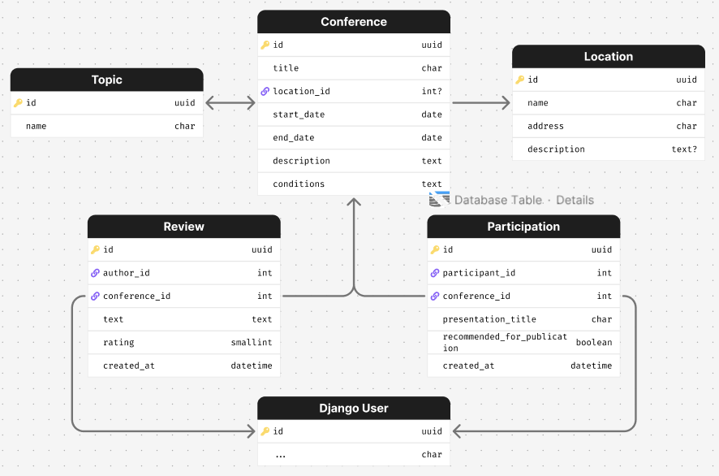
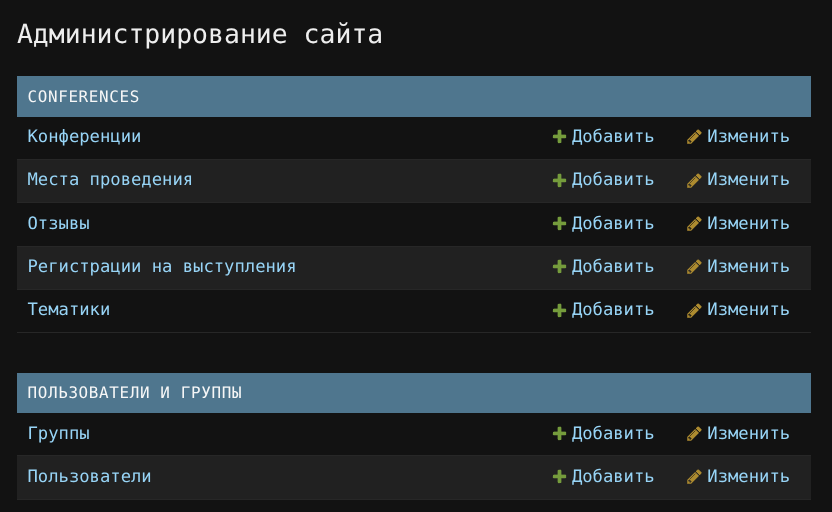
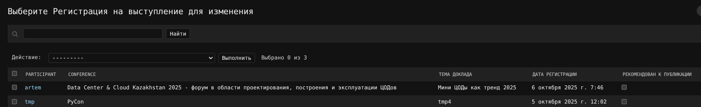
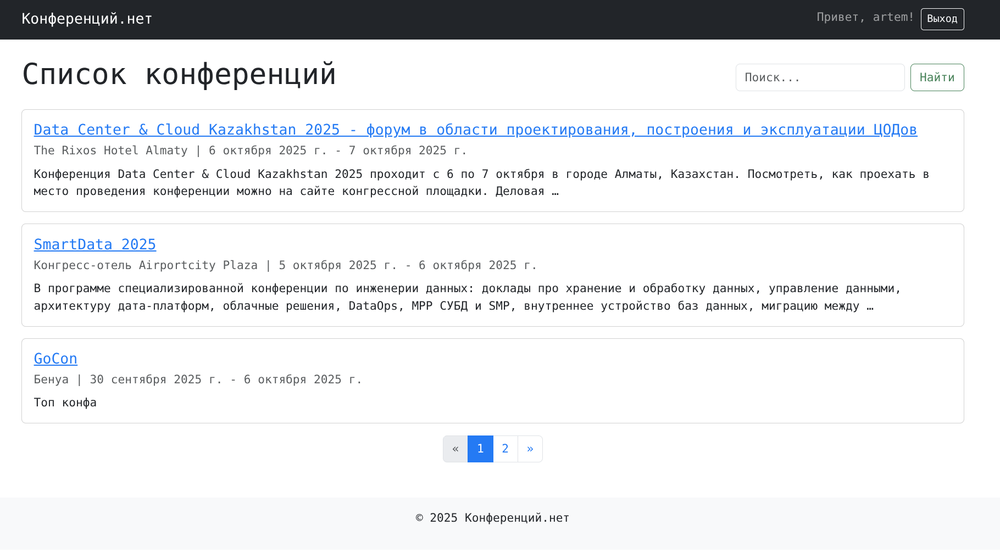
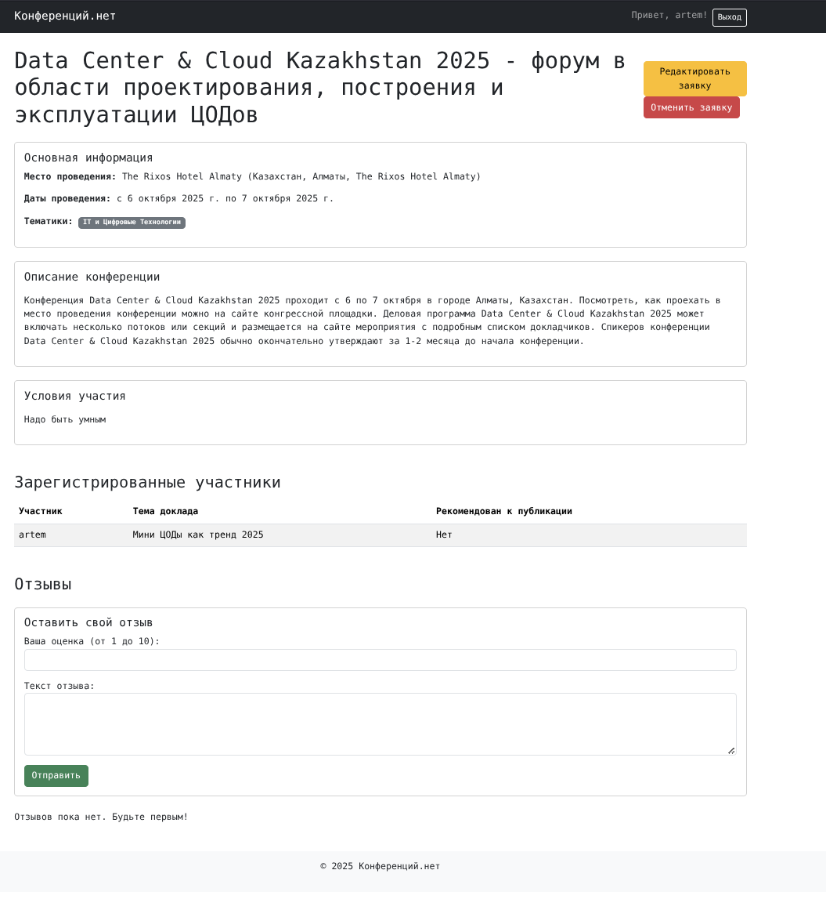

Система учёта научных конференций
В этой лабораторной работе было разработано веб приложение для учёта и управления научными конференциями. Система позволяет пользователям регистрироваться, просматривать список предстоящих конференций, подавать заявки на выступление, а также оставлять отзывы и оценки. Администратор обладает возможностью через админку рекомендовать доклады к публикации.
Ход выполнения
Модели данных
Первым шагом была спроектирована основа приложения - модели данных.
- Conference хранит ключевую информацию о мероприятии: название, тематики, место и даты проведения, а также подробное описание и условия участия.
- Location и Topic являются вспомогательными моделями для структурирования информации.
- Participation - модель, связывающая пользователя и конференцию. Она содержит тему доклада
и специальное логическое поле
recommended_for_publicationдля отметки администратором. - Review позволяет пользователям оставлять отзывы на конференции. Включает текст комментария, рейтинг от 1 до 10 и дату создания. Для предотвращения дублирования была установлена уникальность на пару "пользователь-конференция".
class Location(models.Model):
"""Модель места проведения конференции."""
name = models.CharField("Название места", max_length=255)
address = models.CharField("Адрес", max_length=300)
description = models.TextField("Описание места", blank=True)
class Meta:
verbose_name = "Место проведения"
verbose_name_plural = "Места проведения"
def __str__(self):
return self.name
class Topic(models.Model):
"""Модель тематики конференции."""
name = models.CharField("Название тематики", max_length=150, unique=True)
class Meta:
verbose_name = "Тематика"
verbose_name_plural = "Тематики"
def __str__(self):
return self.name
class Conference(models.Model):
"""Модель научной конференции."""
title = models.CharField("Название", max_length=255)
topics = models.ManyToManyField(Topic, verbose_name="Тематики", related_name="conferences")
location = models.ForeignKey(
Location,
on_delete=models.SET_NULL,
null=True,
verbose_name="Место проведения"
)
start_date = models.DateField("Дата начала")
end_date = models.DateField("Дата окончания")
description = models.TextField("Описание конференции")
conditions = models.TextField("Условия участия")
class Meta:
verbose_name = "Конференция"
verbose_name_plural = "Конференции"
ordering = ['-start_date'] # сначала новые
def __str__(self):
return self.title
class Participation(models.Model):
"""Модель регистрации пользователя на выступление в конференции."""
participant = models.ForeignKey(User, on_delete=models.CASCADE, related_name="participations")
conference = models.ForeignKey(Conference, on_delete=models.CASCADE, related_name="participations")
presentation_title = models.CharField("Тема доклада", max_length=255)
created_at = models.DateTimeField("Дата регистрации", auto_now_add=True)
recommended_for_publication = models.BooleanField(
"Рекомендован к публикации",
default=False,
help_text="Отмечается администратором"
)
class Meta:
verbose_name = "Регистрация на выступление"
verbose_name_plural = "Регистрации на выступления"
# один пользователь может зарегистрироваться на конференцию только один раз
unique_together = ('participant', 'conference')
def __str__(self):
return f"{self.participant.username} на '{self.conference.title}'"
class Review(models.Model):
"""Модель отзыва о конференции."""
author = models.ForeignKey(User, on_delete=models.CASCADE, related_name="reviews")
conference = models.ForeignKey(Conference, on_delete=models.CASCADE, related_name="reviews")
text = models.TextField("Текст комментария")
rating = models.PositiveSmallIntegerField(
"Рейтинг",
validators=[MinValueValidator(1), MaxValueValidator(10)]
)
created_at = models.DateTimeField("Дата создания", auto_now_add=True)
class Meta:
verbose_name = "Отзыв"
verbose_name_plural = "Отзывы"
ordering = ['-created_at'] # сначала новые
unique_together = ('author', 'conference') # Один пользователь - один отзыв на конференцию
def __str__(self):
return f"Отзыв от {self.author.username} на '{self.conference.title}'"

Формы
Были созданы две основные формы на основе ModelForm:
- ParticipationForm содержит одно поле -
presentation_title(тема доклада), которое пользователь заполняет при подаче заявки. -
ReviewForm позволяет указать рейтинг и текст отзыва.
-
Для регистрации новых пользователей применялась стандартная форма Django
UserCreationForm.
class ParticipationForm(forms.ModelForm):
class Meta:
model = Participation
fields = ['presentation_title']
labels = {
'presentation_title': 'Тема вашего доклада'
}
class ReviewForm(forms.ModelForm):
class Meta:
model = Review
fields = ['rating', 'text']
widgets = {
'rating': forms.NumberInput(attrs={'class': 'form-control', 'min': 1, 'max': 10}),
'text': forms.Textarea(attrs={'class': 'form-control', 'rows': 4}),
}
labels = {
'rating': 'Ваша оценка (от 1 до 10)',
'text': 'Текст отзыва'
}
URL адреса и Пользовательский функционал
Для навигации по сайту и выполнения действий была настроена маршрутизация.
- Главная страница (
/) отображает список всех конференций с поиском и пагинацией. - Детальная информация о конференции доступна по адресу
/conference/<id>/. - Процессы аутентификации вынесены в
accounts/, где/accounts/signup/отвечает за регистрацию, а для входа и выхода используются встроенные представления Django (/accounts/login/,/accounts/logout/). - Для создания, редактирования и удаления заявок на участие были созданы соответствующие
ендпоинты:
/conference/<id>/participate/,/participation/<id>/edit/и/participation/<id>/delete/. - Добавление отзыва происходит по адресу
/conference/<id>/review/.
Представления
Логика работы приложения реализована с помощью Class Based Views.
- ConferenceListView отвечает за отображение списка конференций. В нем была реализована логика поиска по названию и
описанию с помощью
Qобъектов, а также пагинация (paginate_by). - ConferenceDetailView отображает полную информацию о конференции, а также связанные с ней списки участников и отзывы.
- Классы ParticipationCreateView, ParticipationUpdateView и ParticipationDeleteView управляют жизненным
циклом заявки на выступление. Для защиты роутов использовались миксины
LoginRequiredMixinиUserPassesTestMixin, которые гарантируют, что пользователь может редактировать или удалять только свою собственную заявку. - ReviewCreateView обрабатывает отправку отзыва.
Панель администратора
Была кастомизирована панель администратора. В файле admin.py для
модели Participation поле recommended_for_publication было добавлено в list_editable. Это позволит администратору
изменять статус рекомендации к публикации прямо из общего списка заявок без необходимости переходить на страницу
редактирования каждой из них, что значительно повышает удобство работы.


Скриншоты сайта

